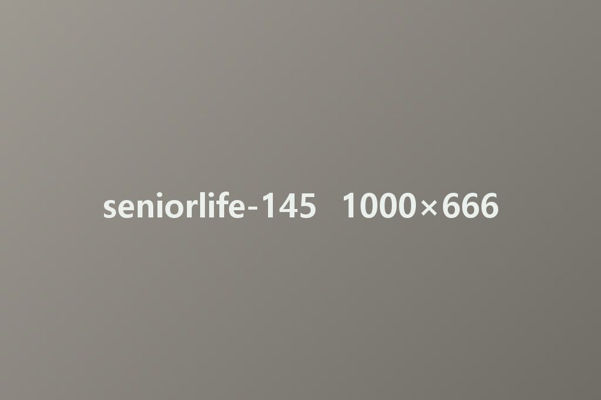
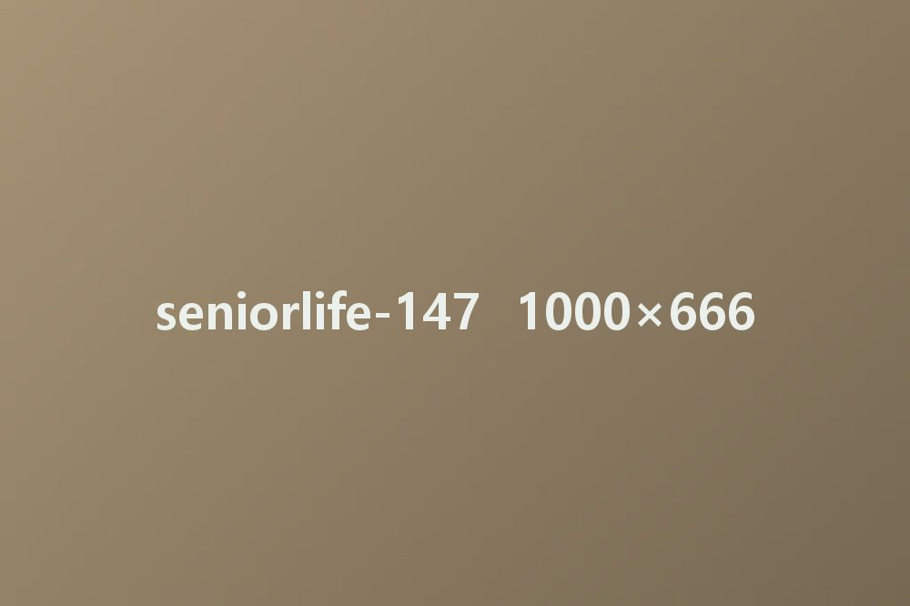
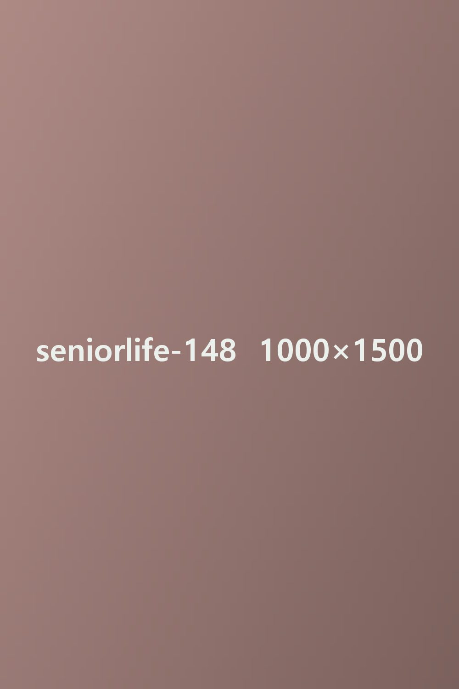
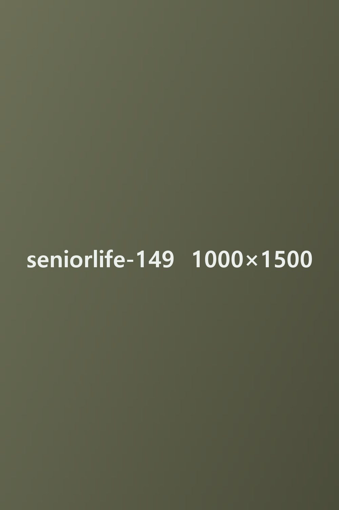
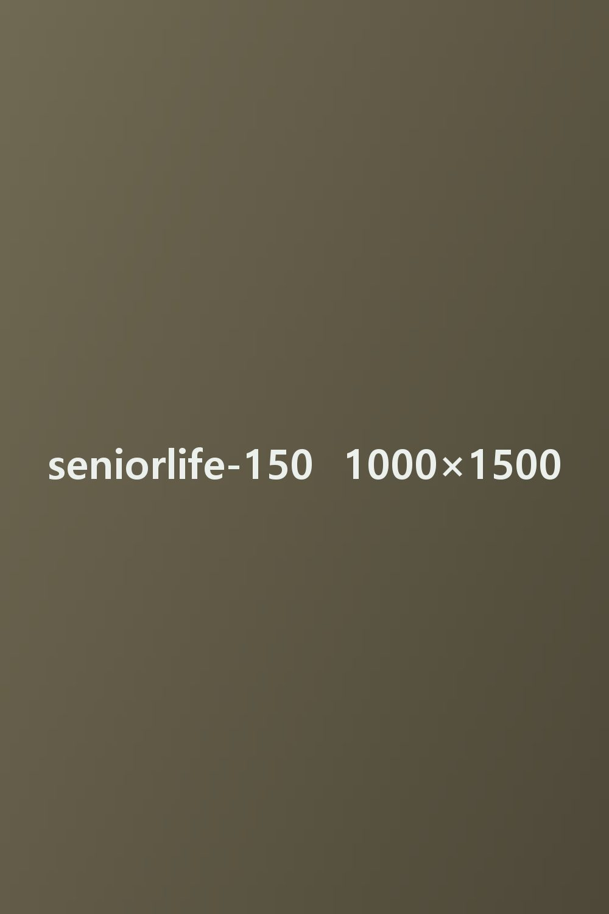

콘텐츠시니어라이프시니어라이프 상세 쪽
콘텐츠시니어라이프시니어라이프 상세 쪽
“물빛정원? 거기 좋지. 직접 한번 가 봐요. 말로는 다 못 해!” 남도에 사는 친구가 그렇게 말했다. 그 동네엔 개인이 가꾼 정원이 서너 곳 있는데 그중 물빛정원이 으뜸이라고 했다. 좋은 정원이란 어떤 곳일까? 갖가지 나무가 저마다 뽐내는 화려한 정원? 손을 덜 대고 들풀의 기운을 살린 정원? 나무를 마주 보고 앉아 조용히 이야기를 나눌 벤치가 있는 다정한 정원? 사람마다 마음에 드는 정원의 모습은 다를 것이다.

그래도 나쁜 정원은 없다. 꾸민 방식과 성격이 다를 뿐, 한순간도 쉬지 않고 애쓰는 식물들의 세계를 보여 준다는 점에서 모든 정원은 귀하다. 뜻깊은 곳이다. 생명이 모여 사는 집이다. 사는 일에 지치고 힘들어 녹초가 된 사람도 정원의 나무를 만나면 다시 기운을 얻는 까닭이 여기 있다. 그러니 어찌 좋지 않으랴. 정원이 있다는 것만으로 그저 고마울 뿐이다.
물빛정원에 들어서자 마치 음악 같은 풍경이 펼쳐진다. 큰 나무와 작은 나무, 그리고 앙증맞은 풀꽃들이 사이좋게 어울려 밝고 맑은 노래를 함께 부르는 듯한 명랑한 기운이 흐른다. 노래 제목은 물을 것도 없이 ‘봄’이다. 계절은 지금 모든 것이 깨어나는 이른 봄이 아닌가. 뒤끝 있는 겨울이 한바탕 꽃샘추위를 몰고 왔지만, 그래도 봄은 어김없이 다시 찾아왔다. 그래서 나무들은 기쁜 노래를 연주한다. 어느 유명한 봄 협주곡도 이만은 못할 것이다. 맑은 기운이 가득한 음악을 소리가 아니라 얼굴로 연주한다. 이 발랄한 합창단원들의 발그레한 볼에는 촉촉한 물기가 맺혀 있다. 그들이 입은 옷의 빛깔은 순하고 여린 연둣빛이다. 지휘는 누가 하나? 따스한 볕을 내려보내는 해, 허공에서 살랑이는 바람, 그리고 온기를 뿜는 땅이다. 하늘과 땅이 하나 되어 가락을 빚는다. 이쯤이면 웅장한 합동 무대다. 사람을 들뜨게 하고도 남을 공연이다.
삶이 희망차 보이는 건 대개 이런 곳에서다. 그렇다면 조금 엉성한 정원이 있다 해도 사실 흠이랄 것이 없다. 그 정원 역시 꿋꿋한 자연의 순환을 어김없이 보여 주기 때문이다. 고단한 삶을 오랜만에 너그러운 눈으로 돌아보게 하기 때문이다. 모든 정원은 이렇게 착한 일을 한다. 정원만 그런 것도 아니다. 꼭 정원만 정원일까. 화분 서너 개가 덩그러니 놓인 아파트 베란다도 정원이 될 수 있다. 손바닥만 한 텃밭도, 농부의 논도 가만히 들여다보면 큰 산에 견줄 만한 대자연일 수 있다. 사람이 지닌 가장 큰 재주인 상상력을 넓게 펼칠 수만 있다면 말이다.

정원의 역사는 길다. 옛날부터 정원을 즐긴 사람이 많았다. 그래도 옛 선비들만큼 정원을 깊이 즐긴 이들은 드물다. 선비들은 글과 역사와 철학을 파고들면서도, 정원에서 멋을 즐기는 일에도 능했다. 귀양을 간 먼 시골에서도 작은 원림(園林, 옛 정원)을 꾸리고 그 안에서 마음을 다스린 이들이 적지 않았다. 바다 건너에서도 정원을 사랑한 작가와 화가가 많았다. 그들은 평생 정원을 곁에 두고 살다시피 했다. 사는 곳을 옮길 때마다 새로 정원을 만들었으니까.

정원을 사랑한 이들은 정원을 ‘마음이 쉬는 곳’이라고 불렀다. 정원의 나무를 ‘말없이 가르치는 스승’이라고도 했다. 마음의 목마름과 갈등을 정원에서 풀었다. 그들은 특히 홀로 선 나무를 오래 바라봤다. 혼자 서 있는 나무는 외로운 사람을 닮았다. 세상을 피해 숨은 사람이 아니라, 스스로 혼자 있기를 고른 단단한 사람을 닮았다. 외로움이라면 우리 모두 조금씩은 안다. 몸이 아프거나 마음이 무너진 날을 지나 본 사람이라면 나무와 자신이 닮았다는 것을 알아볼지도 모른다. 외로움 속에 자란 단단한 나. 세상의 소란에 흔들리지 않는 꼿꼿한 마음. 홀로 선 나무가 품은 그 굳센 기운을 바라보며, 우리는 나무를 손잡고 걸을 만한 인생의 길동무로 삼는다.

물빛정원의 산책로는 리듬이 있다. 활처럼 몇 번이고 휘어지며 정원 구석구석으로 이끈다. 서쪽 언덕에 오르면 호수가 보인다. 이 호수를 생각하면 물빛정원은 물 정원이다. 초록 물빛이 밀려드는 정원이다. 저만치 먼 물 위에는 산 그림자가 드리워 있다. 하늘에는 구름이 줄지어 흘러간다. 산책로는 꽃밭으로 이어진다. 숲으로 들어가기도 한다. 그곳이 숲인 건 손대지 않은 나무들이 모여 사는 마을이기 때문이다. 가꾸지 않아 무성하고, 무성해서 넉넉한 곳이다. 발길은 때로 이런 곳에서 더 오래 머문다. 꾸민 것들에 지쳤을 때, 내 안에 남은 자연을 들여다보게 될 때, 바로 그런 때에.

정원에 흔한 건 새싹과 새잎이다. 막대기를 꽂아도 싹이 튼다는 봄이니 오죽할까. 싹은 될성부른 기운이 있어 싹이다. 그 덕분에 마침내 꽃을 얻는다. 복숭아나무와 벚나무와 해당화는 벌써 꽃을 달았다. 폭죽처럼 팡팡 꽃망울을 터뜨린다. 그러고는 안달하며 외친다. “나 좀 봐 줘요!” 꽃 핀 나무들은 봄의 기쁨을 참을 수가 없는 것이다.
참지 못하는 게 꽃만은 아니다. 보라! 돌 틈에 야무지게 핀 노란 민들레꽃에서 벌어진 일을. 언제부터 몸을 밀어 넣은 녀석일까. 벌이 꽃 속에서 정신을 놓았다. 꼼짝도 않으니 이미 흠뻑 취한 것이다. 영락없이 한낮에 술에 취해 엎드린 한량 모습이다. 봄은 빠져들기 좋은 계절이다. 그렇다고 다 가질 수야 있겠나. 꽃을 좋아하는 벌인들 무슨 수가 있으랴. 아름다운 것은 다 가질 수 없다. 다 가질 수 없어서 아름다운지도 모른다.
#남도여행 #물빛정원 #봄나들이 #꽃구경
*이 콘텐츠는 보듬케어 편집팀이 정원 나들이를 다녀와 쓴 글입니다.